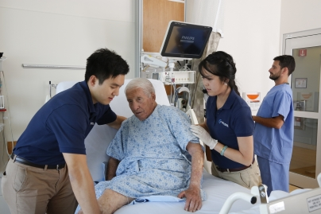

Aayma Irfan
I name is Aayma Irfan, I am studying from University of
California, Riverside as a Neuroscience major. I am very passionate about
medicine and I strive to be a healthcare provider. I want to be a cardiologist.
Besides medicine I care interest in art history and traveling, I am a cultured
individual who is open to exporloring different parts of the world. I did a
medical internship in Greece where I not only got a better understanding of
heathcare but I also immersed myself into the diversity of a differnent culture
so to become a practitioner that represents and connects with indivduals globally.
I am open to building my skills in the world of financing. I would like to bulid
my business repor so that values I learn can aid me in becoming a better practicing
physican. In conjenction to medical practice excellence, I would like to gain knowledge
on the bussiness attrbutes of healthcare and how I can best give service and
saitisfy my patients.
Below are my qualifications. My experince comes from being accostomed to
the healthcare but I believe healthcare and fincianing have similar core
beliefs in the world of business. With the healthcare experince I have, I
can strive to decicade hardwork, passsion and persistence to set foot in
the world of financing.
Experience
Treasurer
• Managed all monetary transactions and provided detailed and transparent
bookkeeping; adhered to ASUCR guidelines by keeping a financial record in budgets sheets
(on the excel microsoft program), money orders and club records for expenditures
• Developed ideas and organized communication on board for implementing strategic plans
to allocate budgets to food, tee-shirts, culture show, monthly meetings, and social events
• Contributed to the creative process of coordinating and hosting social events
Internship
• Hospital shadowing for 60 hours in various departments
• Observed Neonatal intensive care unit, General surgery, Oncology, Gynecology, Ophthalmology,
Pathology, and the Emergency department
Health Scholar
• Integrating in the hospital environment amongst medical staff,
nurses and Physicians to provide optimal patient care services
Education
UC Riverside
Portfolio
